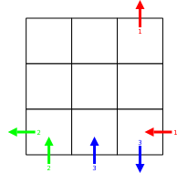
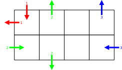

When we tried to interview Sheila Sunshine, we found her wearing a tie-dyed shirt and rainbow-rimmed sunglasses, puffing away on something we’re pretty sure the government wouldn’t approve of. Instead of answering our questions, she just handed us this, saying, “Mirrors are so trippy, man!”
Each tile corresponds to exactly one letter of the alphabet.
Write the answers to the ten numbered puzzles in the grids below, moving down, then up to the next column. (Arrows are numbered for your convenience only.)
|
 |
|
|
|  | |
|
|
Write the answers to the eight non-numbered puzzles in the white rows of the grids below, in an order to be determined.
Write the same phrase in each of the four gray rows.